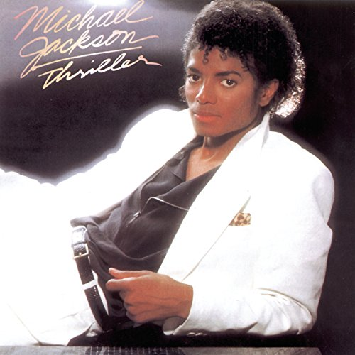
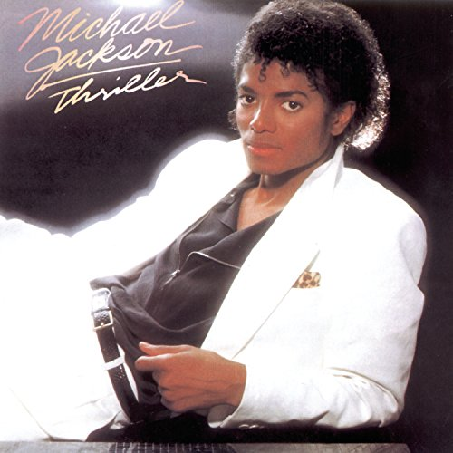

Thriller
Released November 30, 1982
Personell
- Paulinho da Costa – percussion (tracks 1, 7)
- Leon "Ndugu" Chancler – drums (tracks 2, 6, 8)
- Howard Hewett – background vocals (track 8)
Thriller is the sixth studio album by the American singer and songwriter Michael Jackson, released on November 30, 1982, by Epic Records. It was produced by Quincy Jones, who had previously worked with Jackson on his 1979 album Off the Wall. Jackson wanted to create an album where "every song was a killer". With the ongoing backlash against disco music at the time, he moved in a new musical direction, resulting in a mix of pop, post-disco, rock, funk, and R&B sounds.
 

Side One
- Wanna Be Startin' Somethin'
- Baby Be Mine
- The Girl Is Mine
- Thriller
- Lorem, ipsum
- Lorem, ipsum.
Side Two
- Beat it
- Billie Jean
- Human Nature
- P.Y.T. (Pretty Young Thing)
- The Lady in My Life
- The "Billie Jean" music video debuted on March 10, 1983, on MTV. It brought MTV music channel to mainstream attention.
- For his next album, Jackson wanted to create an album where "every song was a killer". He was frustrated by albums that would have "one good song, and the rest were like B-sides
- Quincy Jones, producer
- Thriller remains the best-selling album of all time, with sales of 70 million copies worldwide.